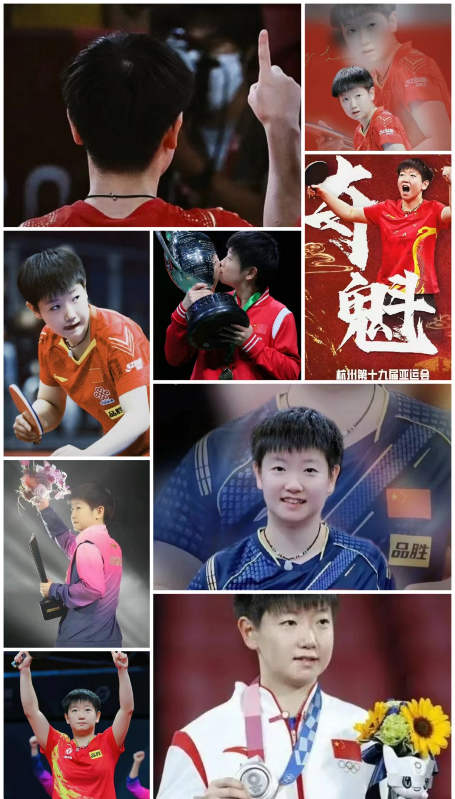

小魔王的成长之路
父母上班没人接孩子，直接把莎莎扔球馆里，第一块球拍只用了4块钱。那时，比球台高不了多少的莎莎，对乒乓球十分痴迷，她没有其他的爱好，就是把教练布置的训练任务全部完成，还要求加练。每次打完一盆球，莎莎总把盆里捡得满满的，从不偷懒。悟性很高，涨球也快，进入省队后莎莎并没有住宿，每天早上4点起来去训练，爸爸风雨无阻坚持接送。在2015年，莎莎在全国少年锦标赛中拿了女单冠军，进入了国家二队。
现世界排名
2017年7月空降世界排名第10，首次获得排名便跻身前10位，这在世界排名史上是非常罕见的情况。
2022年第5周首次登顶世界第一，成为首位“00后”世界第一。
2022年12月收获第一个年终世界第一。
2023年1月首次包揽三项世界第一，在女单、女双以及混双三个项目排名中均位列首位，包揽三项世界排名第一。
